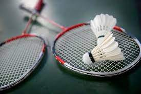
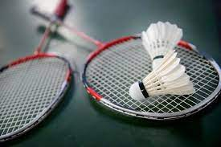
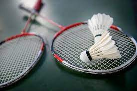

This website provides you the videos about how to play the game, facts about the game and how it helps your body. These games are liked by almost all the children. I am sure that
you would like playing these games.

Want to learn Chess?
Chess is a board game played between two players. It is sometimes called Western chess or international chess to distinguish it from related games such
as xiangqi and shogi. The current form of the game emerged in Southern Europe during the second half of the 15th century after evolving from chaturanga, a
similar but much older game of Indian origin. Today, chess is one of the world's most popular games, played by millions of people worldwide.Chess is an
abstract strategy game and involves no hidden information. It is played on a square chessboard with 64 squares arranged in an eight-by-eight grid. At the
start, each player (one controlling the white pieces, the other controlling the black pieces) controls sixteen pieces: one king, one queen, two rooks, two
bishops, two knights, and eight pawns. The object of the game is to checkmate the opponent's king, whereby the king is under immediate attack (in "check")
and there is no way for it to escape. There are also several ways a game can end in a draw.Organized chess arose in the 19th century. Chess competition
today is governed internationally by FIDE (International Chess Federation). The first universally recognized World Chess Champion, Wilhelm Steinitz,
claimed his title in 1886; Magnus Carlsen is the current World Champion. A huge body of chess theory has developed since the game's inception. Aspects of
art are found in chess composition, and chess in its turn influenced Western culture and art and has connections with other fields such as mathematics,
computer science, and psychology.One of the goals of early computer scientists was to create a chess-playing machine. In 1997, Deep Blue became the first
computer to beat the reigning World Champion in a match when it defeated Garry Kasparov. Today's chess engines are significantly stronger than the best
human players, and have deeply influenced the development of chess theory.
Cricket is a bat-and-ball game played between two teams of eleven players each on a field at the centre of which is a 22-yard (20-metre) pitch with a
wicket at each end, each comprising two bails balanced on three stumps. The game proceeds when a player on the fielding team, called the bowler, "bowls"
(propels) the ball from one end of the pitch towards the wicket at the other end, with an "over" being completed once they have legally done so six times.
The batting side has one player at each end of the pitch, with the player at the opposite end of the pitch from the bowler aiming to strike the ball with a
bat. The batting side scores runs when either the bowler unfairly bowls the ball to the batter, the ball reaches the boundary of the field, or the two
batters swap ends of the pitch, which results in one run. The fielding side's aim is to prevent run-scoring and dismiss each batter (so they are "out", and
are said to have "lost their wicket"). Means of dismissal include being bowled, when the bowled ball hits the stumps and dislodges the bails, and by the
fielding side either catching a hit ball before it touches the ground, or hitting a wicket with the ball before a batter can cross the crease line in front
of the wicket to complete a run. When ten batters have been dismissed, the innings ends and the teams swap roles. At the end of the game, the team that
scored more runs wins, provided that the other team has completed its one or two scheduled innings. The game is adjudicated by two umpires, aided by a
third umpire and match referee in international matches.Forms of cricket range from Twenty20, with each team batting for a single innings of 20 overs and
the game generally lasting three hours, to Test matches played over five days. Traditionally cricketers play in all-white kit, but in limited overs cricket
they wear club or team colours. In addition to the basic kit, some players wear protective gear to prevent injury caused by the ball, which is a hard,
solid spheroid made of compressed leather with a slightly raised sewn seam enclosing a cork core layered with tightly wound string.
Badminton is a racquet sport played using racquets to hit a shuttlecock across a net. Although it may be played with larger teams, the most common forms of
the game are "singles" (with one player per side) and "doubles" (with two players per side). Badminton is often played as a casual outdoor activity in a
yard or on a beach; formal games are played on a rectangular indoor court. Points are scored by striking the shuttlecock with the racquet and landing it
within the opposing side's half of the court.Each side may only strike the shuttlecock once before it passes over the net. Play ends once the shuttlecock
has struck the floor or if a fault has been called by the umpire, service judge, or (in their absence) the opposing side.
Association football, more commonly known as simply football or soccer,[a] is a team sport played between two teams of 11 players with the use of a
spherical ball. An estimated 250 million players active in over 200 countries and dependencies makes it the world's most popular sport to date. The
game is played on a rectangular field called a pitch with a goal at each end. The objective of the game is to score more goals than the opposition by
moving the ball beyond the goal line into the opposing side's goal in the time frame of 90 minutes plus stoppage time and occasionally also extra
time.The game of football is played in accordance with a set of rules known as the Laws of the Game. The ball is 68–70 cm (27–28 in) in circumference
and known as the football. The two teams compete to get the ball into the other team's goal (between the posts and under the bar), thereby scoring a
goal. Players are not allowed to touch the ball with hands or arms while it is in play, except for the goalkeepers within the penalty area. Players
may use any other part of their body to strike or pass the ball and mainly use their feet. The team that has scored more goals at the end of the game
is the winner; if both teams have scored an equal number of goals, either a draw is declared or the game goes into extra time or a penalty shootout,
depending on the format of the competition. Each team is led by a captain who has only one official responsibility as mandated by the Laws of the
Game: to represent their team in the coin toss before kick-off or penalty kicks.
 
